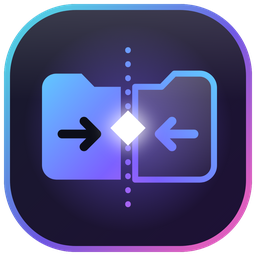

Mirror Files
Privacy Policy · Last updated 22 November 2026In short: Mirror Files runs on your own PC. Your files go straight from your PC to devices you approve. We do not run any server that stores, sees or collects your files, and we do not collect analytics, ads data or personal information.
What the app does
Mirror Files is a Windows app that lets you open your PC's files from a phone, tablet or other computer using a web browser. Each new device must be approved on the PC before it can see anything. You can choose which drives or folders are shared, and you can remove a device at any time.
Data that stays on your PC
- Your files are read from and saved to your PC only when an approved device asks for them. They are never copied to us.
- Approved devices: a device name (taken from the browser, for example "Chrome on Android"), its last IP address, the time it was approved and a hashed access token. This is saved in a settings file in your Windows user folder so the device is remembered.
- Activity log and transfers: recent approvals, uploads and downloads are shown in the app so you can see what happened. This is kept on your PC.
Uninstalling the app or using "Forget device" removes this information.
The "Anywhere" link (Cloudflare)
To let you reach your PC from outside your home network, the app opens a temporary secure (HTTPS) link using Cloudflare's free Quick Tunnel service. Traffic between your devices and your PC passes through Cloudflare's network, encrypted in transit, so that it can reach your PC. Cloudflare processes this traffic under its own privacy policy: cloudflare.com/privacypolicy. A new random link is created each time the app starts, and you can turn the link off in the app.
Local network sharing
On networks Windows marks as Private (home or work), the app can also share over your local network without going through the internet. On networks marked Public, local sharing stays off.
What we do not do
- We do not collect, sell or share personal data.
- No accounts, no sign-in, no advertising, no tracking, no analytics.
- We do not have access to your PC or your files.
Children
The app does not knowingly collect any data from anyone, including children.
Changes
If this policy changes, the new version will be posted on this page with a new date.
Contact
Questions about privacy: Av.n@aol.com